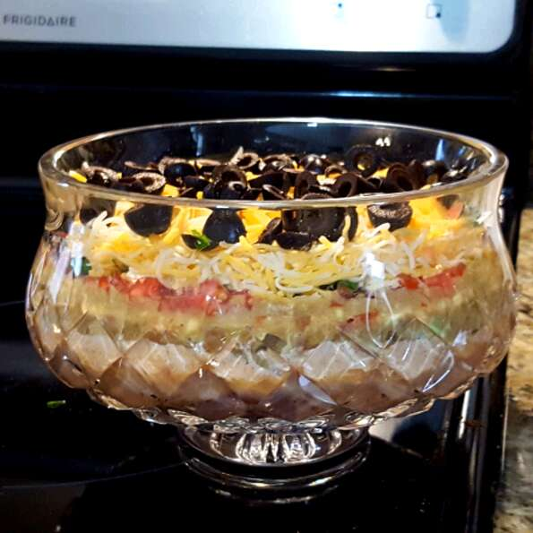

Seven Layer Taco Dip

I am continuously asked to bring this dip for parties and family get-togethers. People gather around the platter until it's gone.
Ingredients
- 1 (1 ounce) package taco seasoning mix
- 1 (16 ounce) can refried beans
- 1 (8 ounce) package cream cheese, softened
- 1 (16 ounce) container sour cream
- 1 (16 ounce) jar salsa
- 1 large tomato, chopped
- 1 green bell pepper, chopped
- 1 bunch chopped green onions
- 1 small head iceberg lettuce, shredded
- 1 (6 ounce) can sliced black olives, drained
- 2 cups shredded Cheddar cheese
Steps
- In a medium bowl, blend the taco seasoning mix and refried beans. Spread the mixture onto a large serving platter.
- Mix the sour cream and cream cheese in a medium bowl. Spread over the refried beans.
- Top the layers with salsa. Place a layer of tomato, green bell pepper, green onions and lettuce over the salsa, and top with Cheddar cheese. Garnish with black olives.